Areas:
| 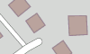 | Residential area | 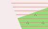 | Area used by military, barracks, military training area, etc. |
| 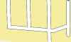 | Parking lot (public) | 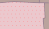 | Business, Mall or area with predominant retail shops |
 |
Parking lot (limited, eg. for customers) | 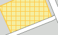 | Parking lot (private) |
 |
Marina, moorings for yachts and motor boats |  |
School, college, university, campus or building |
 |
Hospital |  |
Industrial area or industrial estate, predominantly workshops, factories or warehouses; area used for rails, railway property |
 |
Nature reserve | 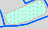 | Playground for children |
 |
Camp ground, site for campers | 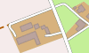 | Farm, agriculturally used area with residential buildings, shelters, stables, garages, silos etc. |
 |
Mining above ground, quarry, pit (gravel, clay, ...), open-cast mining |  |
Buildings |
 |
Forest, commercial forest, wood, distinguished between mixed, deciduous or coniferous forest | Meadow, usually out of town | |
 |
Golf course | 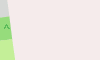 | Background of map |
| 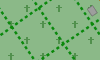 | Graveyard | 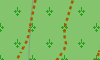 | Vineyard |
 |
Park, green space |  |
Danger area, prohibited area |
| 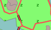 | Zoo | 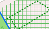 | Garden plot, allotment |
| Cultivated land, agriculturally used area such as fields for cereal and vegetable and tree nursery. These are identical to the map background. |  |
Power station, used for producing electricity or warmth, transformer station | |
| 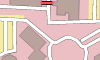 | Administration, offices | 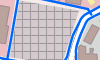 | Construction site (but also fallow) |
 |
Dump, disposal site | Heath | |
 |
Beach |  |
Slit, mud |
 |
Uncultivated land, undergrowth, bush | 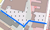 | Square or street only for pedestrians, e.g. pedestrian precinct or shopping arcade |
 |
Playing field, track | Water in general, sea, lake, pond, river, dam lake etc. | |
| 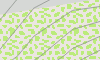 | Mountain pasture, alpine meadow, area above tree line | 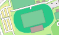 | Sports complex, stadium |
 |
Scree |  |
Ground covered with sand, none or sparse vegetation |
| 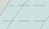 | Glacier, area coverd with ice all year round | Orchard, fruit plantation, cultivated area with trees or bushes for food production | |
 |
Rock | Wetland meadow, also saltmarsh | |
| Reeds, bulrushes |  |
(non-woody) Swamp | |
 |
Bog, fen | Saline | |
| Tidalflat |
Anmerkungen:
- Cultivated land (farmland) is in many countries the most frequently occurring area (in Germany it is 33%). This area is not showed separately but is identical to the map background.
- Forest covers a significant area of many countries (in Germany it is 30%) and therefore is good for rough orientation.
- Larger dots represent stylized humans in busy areas (school, shopping arcade, playground, ...).
- (Lattice) hatching is for areas with access restrictions (mil. area, construction sites, power plants, allotments, private parking, ...) used.
Roads:
| Roads: | |
| 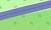 | Freeway, road with a structurally divided lanes (usually a median strip) and dedicated restrictions (one way, prohibited for pedestrians and cyclists). Usually two lanes per direction and a shoulder. |
 |
Freeway entrance or exit, usually with the same restrictions as the freeway itself. |
| 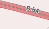 | Road similar to a freeway, but no freeway. |
| 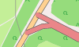 | Interstate or A road entrance or exit, like the freeway entrances or exits. |
| 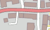 | Interstate or A road, main street under centralized administration with dedicated signs, usually connecting larger cities and for serving national traffic. Also: Roads of higher importance. |
| 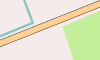 | Secondary or well-built district road (or entrance onto one of these) roads with a centre line, which connects smaller or larger towns. The road serves the regional traffic. |
 |
District road, publicly passable side street in a very simple state, usually no centre line. E.g. district roads connecting villages that are to narrow to be secondary roads. |
| 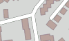 | Road in residential area, road in and around residential areas, not belonging to the other types of roads. |
| 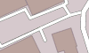 | Side street, publicly passable side street in a very simple state, usually no centre line. E.g. district roads connecting villages that are to narrow to be secondary roads. |
 |
Access road, access to institutions like sports complzips, beaches, motorway services or other buildings in general. |
 |
Traffic-calmed area, a road where one has to to mind playing children. Pedestrians have priority and only walking speed is allowed. |
 |
Roads and paths with restricted access: - General prohibition to use: Usage is prohibited or not possible for motor traffic. - Private road: The owner generally prohibits to use the road for motor traffic (exceptions are possible). |
 |
Roads and paths where usage is not allowed: - General prohibition to use: Usage is prohibited or not possible. - Private road: The owner generally prohibits to use the road (exceptions are possible). |
 |
Roads and paths with restricted access for motor traffic: - Agricultural traffic: Usage is permitted for "agricultural traffic" only. - Forestry traffic: Usage is permitted for "forestry traffic" only. - Delivery traffic allowed: Usage is permitted for delivery of goods to the customer only. |
| Miscellaneous: | |
| 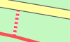 | Stairs, on pavement and hiking paths only for pedestrians. |
| 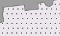 | Pedestrian precinct, way, square or road where only pedestrians are allowed (e.g. shopping malls). |
| 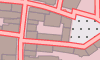 | Pedestrian road, road where only pedestrians are allowed (e.g. shopping malls). |
| Bicycle, foot and bridle paths: Path is not wide enough for a vehicle. |
|
| 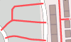 | General foot path, mainly for pedestrians. |
| 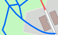 | Combined bicycle and foot path, joint usage through cyclists and pedestrians. |
| 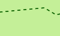 | Bridle path, path for riders. |
 |
General way or path, here: hiking path / trail; not wide enough for vehicles. |
| Agricultural, country or dirt road. Road is wide enough for a vehicle. Three types can be distinguished: |
|
 |
Quality grade 1, paved path (asphalt, concrete, cobblestones, etc.). |
 |
Quality grades 2,3 2 = paved path (gravel or other compacted ground). 3 = paved or repaired path, consisting of hard and soft ground (e.g. fine gravel, sand or mud path). |
 |
Quality grades 4,5 4 = unpaved path, consisting mainly of soft material, plant growth along the middle of the way (e.g. grass, sand or mud path). 5 = unpaved path, surface consisting of grass, soil etc., usually just a trail in the grass, partially hard to distinguish from surround area. |
| Hiking paths. Three difficulties are distinguished: |
|
| 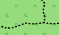 | Hiking path, T1 or T2 T1 = hiking path, trail T2 = classic mointain trail |
 |
Hiking path, T3 or T4 (challenging hiking and alpine hiking, requires relevant experience) T3 = challenging mountain trail T4 = alpine trail |
| 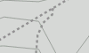 | Hiking path, T5 or T6 or Via Ferrata (challenging Alpine Hiking, requires relevant experience) T5 = challenging alpine trail T6 = very challenging alpine trail Via Ferrata = secured climbing route |
Note:
- Leisure time activities in mountains require a certain amount of experience and hold danger. Basing only on this map no mountain hiking should be planed.
- Agricultural, country or dirt road of grade 2-5 are generally not suitable for road transport. Use restrictions are therefore not reported separately.
Points-Of-Interest (POIs):
 |
Information | 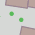 | (significant) Tree |
 |
Summit (usually with altitude) |  |
Industrial plant |
| Spring |  |
Wind-driven power station | |
 |
Pylon (of a high voltage line) | Airport | |
 |
Viewpoint |  |
ATM (or Bank) |
| Hospital |  |
Cave | |
 |
Police station | 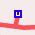 | Underground station entrance |
 |
(Train-) Station |  |
Radio Tower |
 |
Stop (bus, tram) | 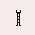 | Observation tower |
| Gas station |  |
Shop (type of shop) | |
 |
Food, drink, refreshment (eg. pub, bar, beer garden, coffee shop, ice cream parlour) |
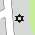 | Jewish place of worship (e. g. synagogue) |
 |
Muslim place of worship (e. g. mosque) |
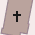 | Christian place of worship (e. g. church) |
 |
School | Museum | |
 |
Shelter | Lighthouse | |
| Campsite, camp ground |  |
Hotel, Motel | |
 |
Inn |  |
Playground |
| 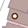 | Restaurant type of restaurant |
 |
Picnic area, service area |
| 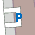 | Parking |  |
limited Parking |
| 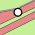 | (Freeway) Exit with number and marking |
 |
general Point-Of-Interest with type and marking |
| 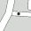 | Bollard (on astreet) | 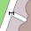 | Gate |
 |
Lift gate | 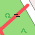 | Cycle barrier |
| (military) Bunker | 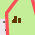 | Ruin | |
| 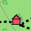 | Alpin Hut (with food and drink), mountain hut |
 |
Alpin Hut (without food and drink), basic self supporter hut |
 |
Wilderness Hut basic self supporter hut |
 |
Basic Hut, bivouac hut |
 |
Lean-To, shelter with (primitive) possibility to sleep | 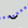 | Col (ridge) |
| 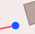 | Aerial lift station |  |
Pass |
Note:
- Many POIs are represented by colored circles. Zoom into the map to see more information about these POIs.
- Leisure time activities in mountains require a certain amount of experience and hold danger. Basing only on this map no mountain hiking should be planed.